Assignment 2 - Parametric Design and Vinyl Cut
In this assignment, I was required to design a parametric press-fit model to be laser cut. The model had to be adjustable to different dimensions such as material thickness, height, and width. The design also had to include at least three press-fit connection points and be created in a CAD program. Part of the prototyping process involved determining the kerf of the laser cutter using an appropriate method. Another part of the assignment was using a vinyl cutter to cut something of my choice. Finally, I was required to explain the process and describe what I learned from it.
Parametric Design
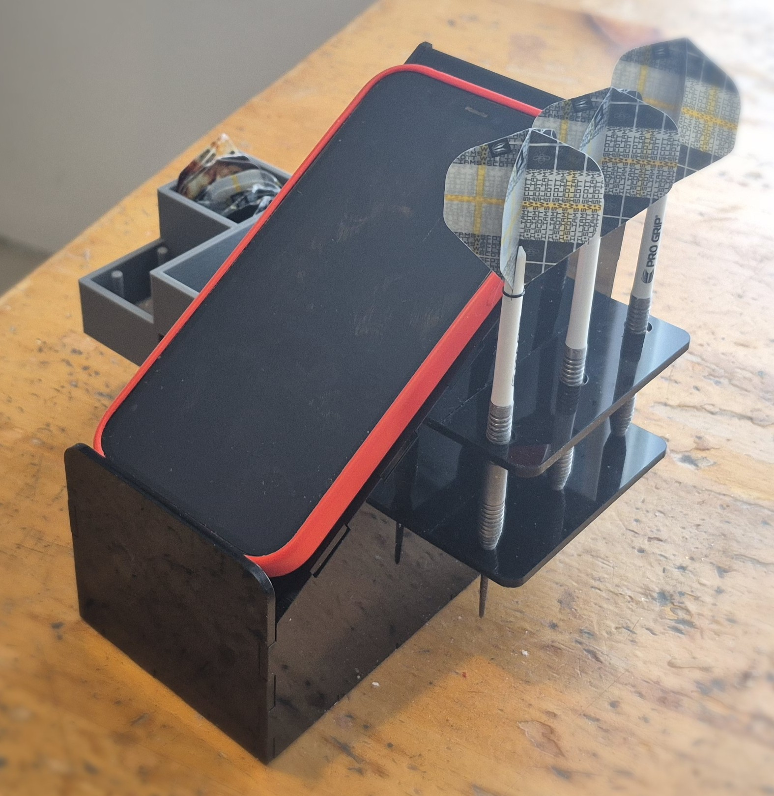
For this part of the assignment I wanted to make something that could be of use in my home. I decided to make an assembly that could be used to hold darts and the components needed for darts. It would also have a place to lay your phone, since players always keeps score for games in a dart app. I wanted the assembly to feel compact and strong, and not have any visible holes or gaps that might look off.
I started by watching most of the videos provided by the teacher to get a better understanding of how Fusion 360 works, especially how parameters are used. I then began sketching the parts on paper and roughly estimated the height, length, and width of the assembly.
Phone Holder
The first part I designed was the diagonal support for the phone holder. I created general parameters, and to make the number of fingers on one side adjustable, I used the method shown in the video Fusion360: Automatically sized finger-joints, https://www.youtube.com/watch?v=9U2JPfkQpsE. Below, you can see the initial parameters I used, along with some of the equations that allowed the number of fingers to be changed.
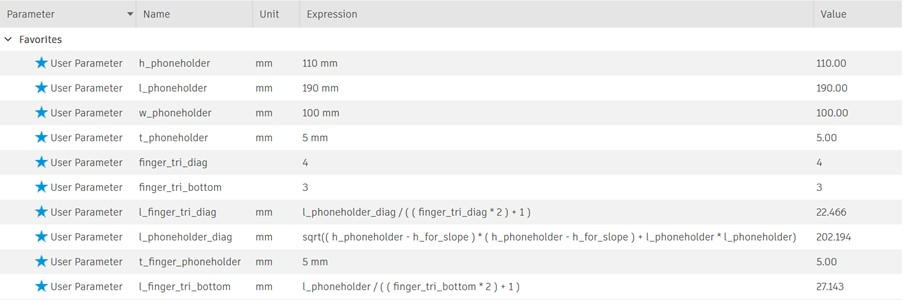
The first version turned out fairly well, but I had not accounted for the need for a small platform to prevent the phone from sliding off the assembly. Also, the general dimensions should not have needed to include the length of the fingers, so that length had to be added separately to the triangle.
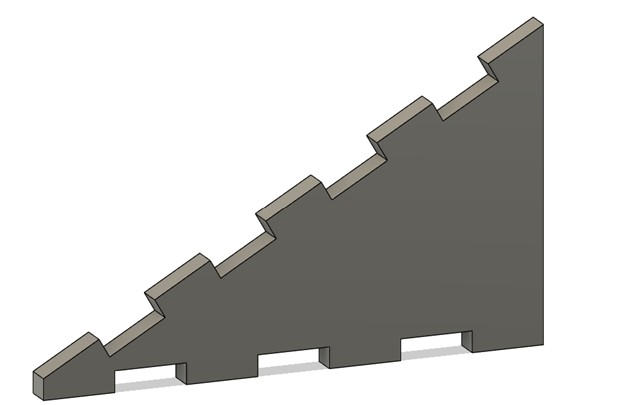
I then remade the part, and the process went much better. I used the same method for all of the finger joints, and the phone-holder part of the assembly was completed, as shown here. The only issue that took some time to solve was that the diagonal support for the phone overlapped with the area where the back of the phone holder was supposed to be. To prevent a gap from appearing, I needed to find the maximum length of the overlapping section and subtract that from the original height of the back piece.
Dart Holder
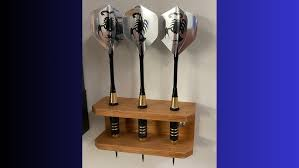
For the dart holder, I started by looking at other dart-holder designs and decided to make mine similar to the one shown here, although mine would be connected to the phone holder. It would be attached using a mortise-and-tenon joint. The process was fairly simple. The main requirements were that the point of the dart should not touch the ground, the flights should sit above the phone holder, and the distance between the first and second support points should be relatively large for stability.
Component Holder
I decided to make the component holder as a 3D-printed part, but the process I went through to create it can be seen in Assignment 3. However, I still needed to prepare the holes where the component holder would be placed. I used the dimensions from Assignment 3 and then added some clearance. To start with, I used 1 mm of clearance for both the length and the height.
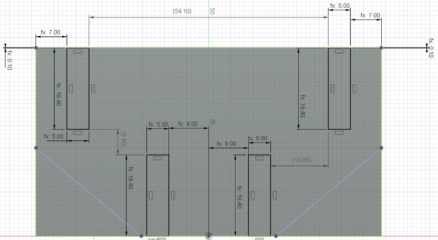
Determining Kerf of Laser
Next, I needed to determine the kerf of the laser. I reviewed previous projects and found that most of them had calculated the kerf of the laser cutter in the same way and achieved good results, so I decided to use that method as well.
I drew 20 rectangles in Autodesk Fusion with a width of 1 mm and a height of 3.4 mm. The height was made greater than the width because we wanted a greater distance between the corners of the rectangle, since material removal caused by the laser cutter can be greater at the corners than along a straight line.
Next, the file was saved as a DXF and opened in Inkscape, where the drawing could be adjusted slightly. Extra lines that should not have been there were deleted. Then Object → Fill and Stroke → Stroke style was opened, and the line thickness was set to 0.02 mm. In addition, Fill was set to no color and Stroke paint was set to flat color. Finally, the file was saved as an SVG, making it ready for the laser cutter.
The cut piece was unfortunately larger than what the caliper could measure at once, so I calculated the kerf in a different way. I measured 15 rectangles, which was the most I could measure with the caliper, and used the following calculation: the total length of 15 rectangles was 146.7 mm. Between the 15 rectangles there are 14 internal cuts, and at the two ends there are two half-kerf cuts, giving a total of 15 kerf widths. Therefore, (150 - 146.7) / 15 = kerf, which gives a kerf of 0.22 mm.
After reading more about kerf, I found that the offset from the ideal dimensions does not depend only on kerf, but also on the laser-cutter settings, variation in the material, material thickness, lens cleanliness, air assist, and more. Because of that, I decided to keep the conditions as consistent as possible by using the same settings and the same material for testing as for the final prototype. I then made a slot test with different tab sizes, using kerf values from 0.17 mm to 0.25 mm in steps of 0.01 mm.
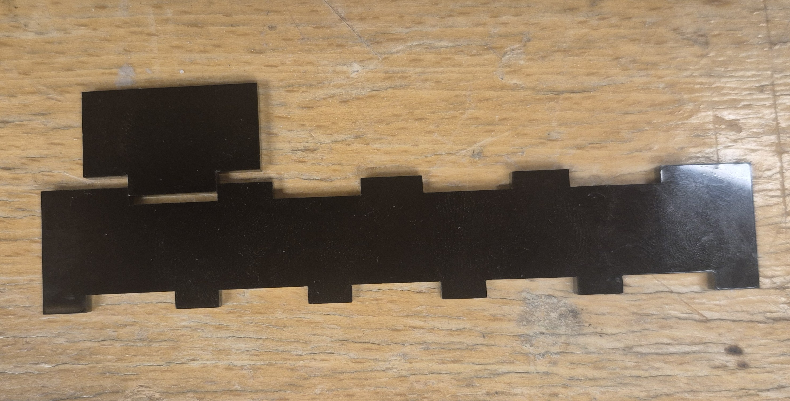
After that I found that 0.19 mm resulted in the best pressfit for my liking.
Kerf Compensation
To compensate for the kerf, I followed the method shown in this video, https://www.youtube.com/watch?v=dKBxSx3Tv1k. It uses a built-in feature in Fusion that supports laser cutting. The video explains the full process very well, but I will go through the main steps here. In the Manufacture section, I created separate setups for each side that needed to be cut. This means that the parts do not all need to be laid flat in the same way; instead, each setup defines the direction in which the part will be cut. In my case, the cutting direction was -Z. The process was: Create New Setup → set Operation Type to Cutting → set Orientation to Z axis/plane and X axis → click a face of the part you want to cut → click OK.
After that, I selected 2D Profile Cutting → set the tool as the laser cutter being used → go to Geometry and select the contour to cut, making sure All Loops is enabled so that holes in the part are also cut → go to Passes and set Compensation Type to In computer → finally, go to Linking and disable Lead-in and Lead-out. To make sure it worked, I hovered over the 2D profile, where I could see how the cutting path would actually be generated, with the holes being cut half a kerf closer than drawn and the outer edges being cut half a kerf farther out than drawn, as shown below.
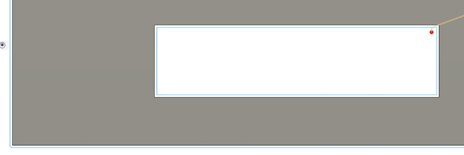
I then repeated this for all the bodies. Finally I right-clicked Setups and pressed Post-process. I use Post as AutoCAD DXF and check the respective boxes as seen below.
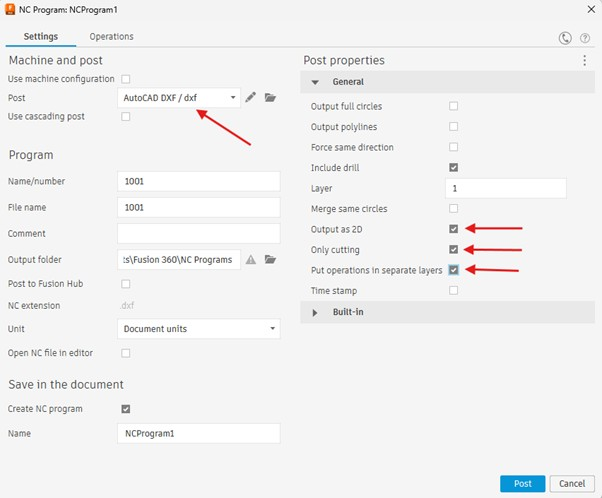
Lastly the the DXF was prepared in Inkscape the same way as for the kerf test.
Testing
I did some tests to be sure that everything would fit in place well and correctly. The tests were all done with the account for kerf. The places that needed checking were;
- The general press fits: I had little to no idea on how many finger joints was best for each side. I asked ChatGPT what the ideal width of fingers was for 3mm acrylic material and they said to have it around 12mm-18mm because acrylic is quite brittle and we don’t want to accidentally snap the fingers when press fitting. For the testing I used around 14.2 mm width for the finger joints. I tested both 0.19 mm kerf and 0.20 mm kerf.
- The mortise tenon fit for the dart holders into the wall: I used the same width and number for the fit of the dart holders into the wall.
- The hole for the point of the dart being correct: I calculated that the hole for the point of the dart to be 4 mm diameter, so I did three holes with 3.5mm, 4mm and 4.5 mm diameter respectively.
- The component holder fitting into the wall correctly: I simply used the dimensions and lengths that I were in my prototype.
I prepared the dxf file in Inkscape by increasing the line thickness to 1.12 mm → Ctrl + Shift + R to resize the page to the body → lower the line thickness back to 0.02mm. This makes it so that the when you press Ctrl+P and put the body into the app for the laser cutter, you have a selection that is slightly larger then your body and so the laser cutter is not accidentally cutting the edge of the acrylic plate. In the app for the epilog laser I picked 3 mm acrylic which has speed 22%, power 100%, frequency 100%. I put Auto focus to thickness with 3.175 mm thickness.
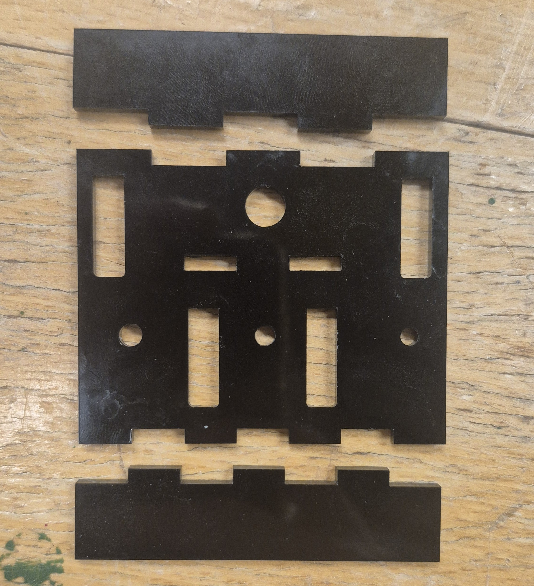
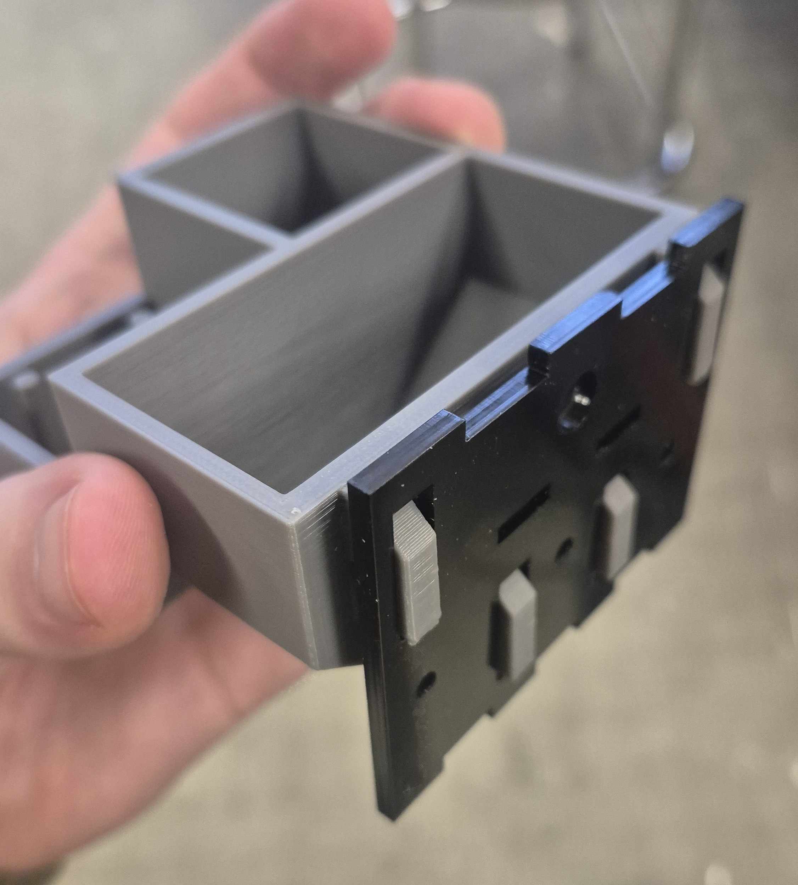
Result: The holes for the component holder needed to be closer to each other, because I had forgotten to account for the clearance between the upper and lower holders, so the part did not fit. The mortise-and-tenon joint was also too tight, so I changed the kerf compensation to 0.18 mm. In addition, the hole for the darts needed to be smaller than 3.5 mm, so I changed it to 3.2 mm.
Final Design
Finally, I could laser cut the part, which I did seperately for each body to get better results, and used same settings as for the tests. Final design can be seen here below.
Vinyl Cutting
For this part of the assignment, I decided to create a dart-themed sticker for the dart holder, as well as a PRX logo for my computer. I found both images online and imported them into Inkscape. I then used Trace Bitmap → Brightness cutoff.
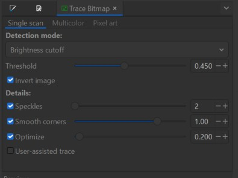
I then prepared the Inkscape drawing for the vinyl cutter in the same way as for the laser cutter and saved the file as a PDF. The PDF was then sent to the vinyl cutter using the print command, making sure that the height and width matched. The vinyl sheet was placed under the pinch rollers, which had to be aligned with the white guide marks on the cutter. I used the Edge and Piece loading settings on the machine. The cutter then cut the design, and afterwards I weeded out the excess vinyl.
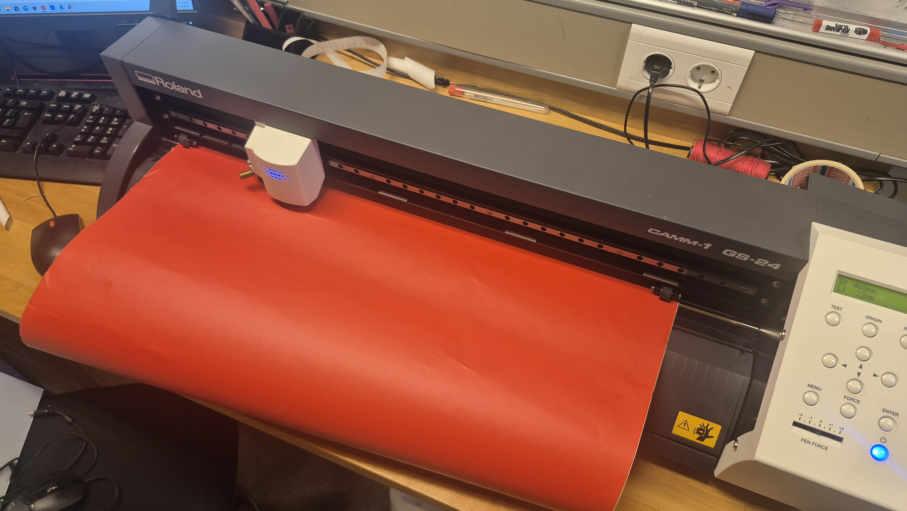
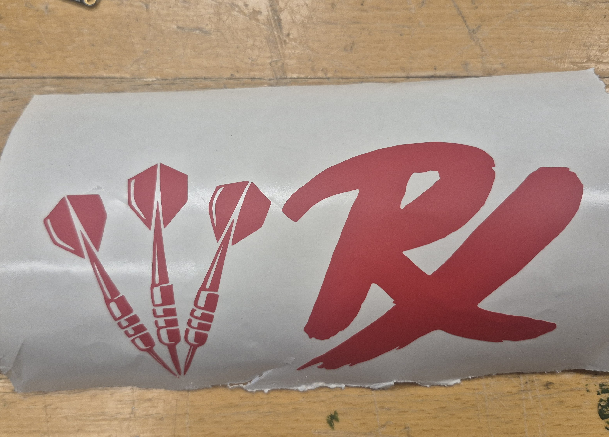
To attach the stickers to the computer and the phone holder, I applied transfer tape on top of the vinyl and pressed it down using the end of a pen so that the vinyl would stick to the tape.
Final vinyl logo
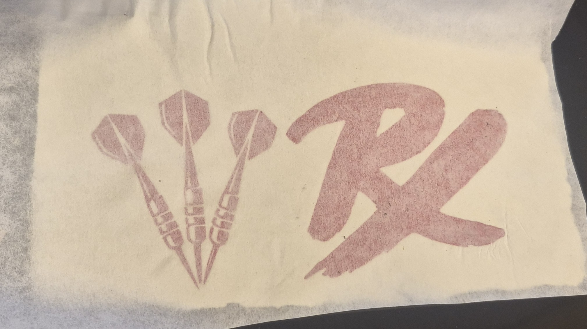
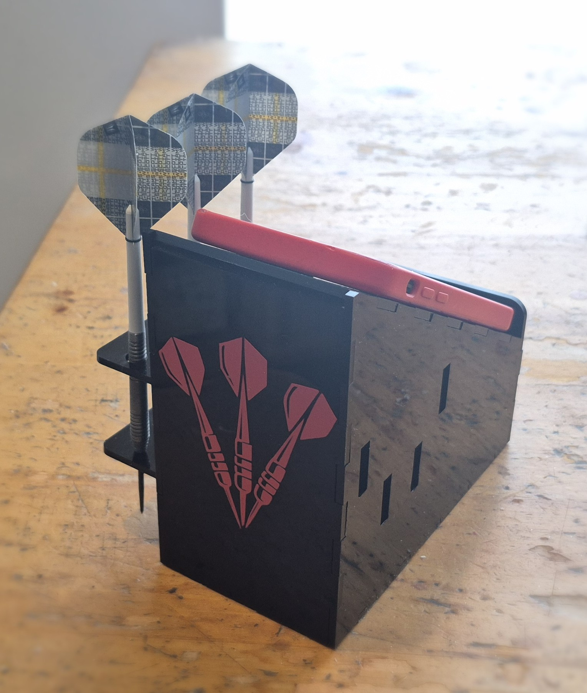
Final thoughts
From this assignment, I learned that the design process takes a lot more testing and adjustment than I first expected. At the beginning, I mainly focused on getting the shape and idea to work, but during the process I realized how important it is to think about things like kerf, tolerances, fit, and how the parts will actually come together in real life. I also got much more comfortable using parameters in Fusion 360, and I could see how useful they are when changes need to be made quickly. The vinyl-cutting part also taught me that even simple-looking results still require proper file preparation and careful setup of the machine. Overall, I feel that I learned not just how to make the final design, but also how important it is to test, make mistakes, and improve the design step by step.
Thingiverse
All files from this assignment can be found here, https://www.thingiverse.com/thing:7309973.